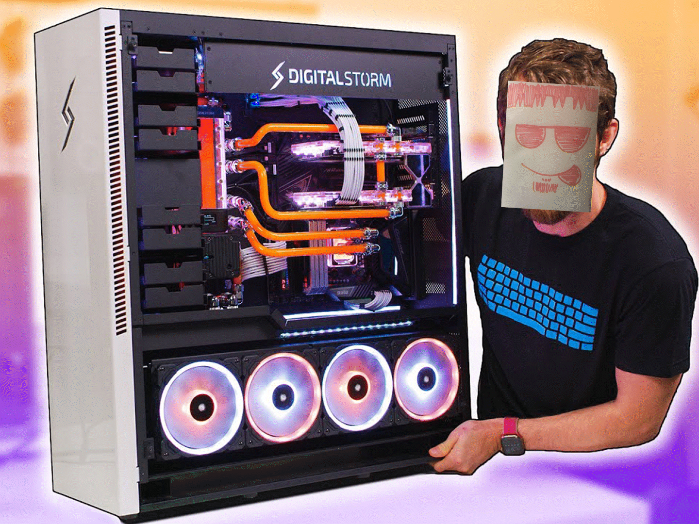
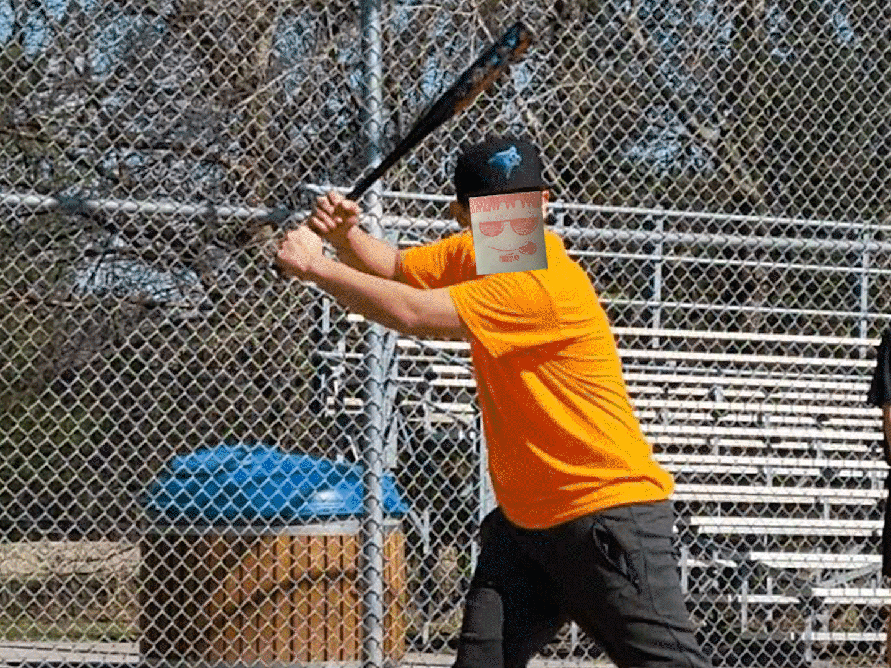

Baking
Tristan loves baking. During the middle of 2020, his older sister (who knows how to bake) told him to
bake some bread, because he wanted sandwiches and his family were out of bread. He reluctantly did it
but after finishing it, he found that baking wasn't that difficult and he eventually turned it into a
hobby.
He primarily bakes the following:
- Bread
- Cookies
- Brownies
- Pretzels

Video Games
When he should instead be studying and productively doing school work and assignments, Tristan is often
seen playing video games, on his computer.
He mostly enjoys playing:
- Minecraft
- Red Dead Redemption II
- Fortnite
- Among Us
Board Games
Tristan enjoys playing table top games with his family and sometimes friends. He doesn't play board games
as often as video games, but he enjoys the feeling and thrill of it a lot more.
His favourite board games are:
- Chess
- Catan
- Most Card Games
- Monopoly

Movies/TV Shows
When Tristan isn't doing anything above this section, he is watching a movie or a show. Tristan really
enjoys pop-culture. He often makes many references to pop-culture, however, most of his
friends dont understand them because they aren't as big of geeks as he is.
His favourite movie franchises are:
- Star Wars
- Marvel
- Transformers
- Shrek
- Back to the Future
- Karate Kid
- Rocky
His favourite TV Shows are:
- Doctor Who
- Arrow
- The Flash
- Cobra Kai
- Love Live

Technology
Tristan is a very tech savvy person. He likes dabbling with computers and keyboards mostly. Before he
started university he built his first and current desktop computer, choosing all of the parts
and setting up the software on it himself. He also built and modded his own mechanical keyboard.
He has also taught himself how to repair iPhones and solder wires.
Click This To See His Keyboard Video Sound Test

Outdoor Activties
Occasionally he will go outside and have some fun but not often. He does still enjoy the things that he
will end up doing outdoors.
He really enjoys:
- Playing Baseball
- Archery
- Fishing
- Going to the Park with Friends
- Swimming